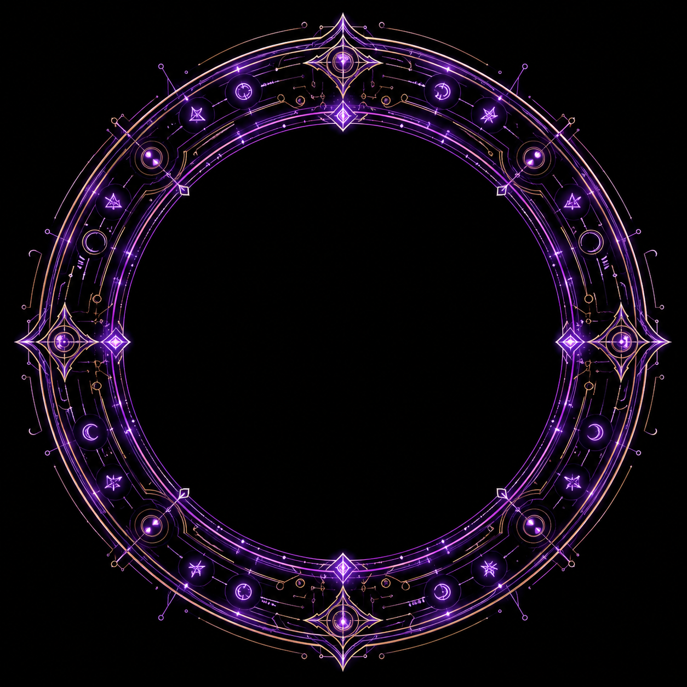
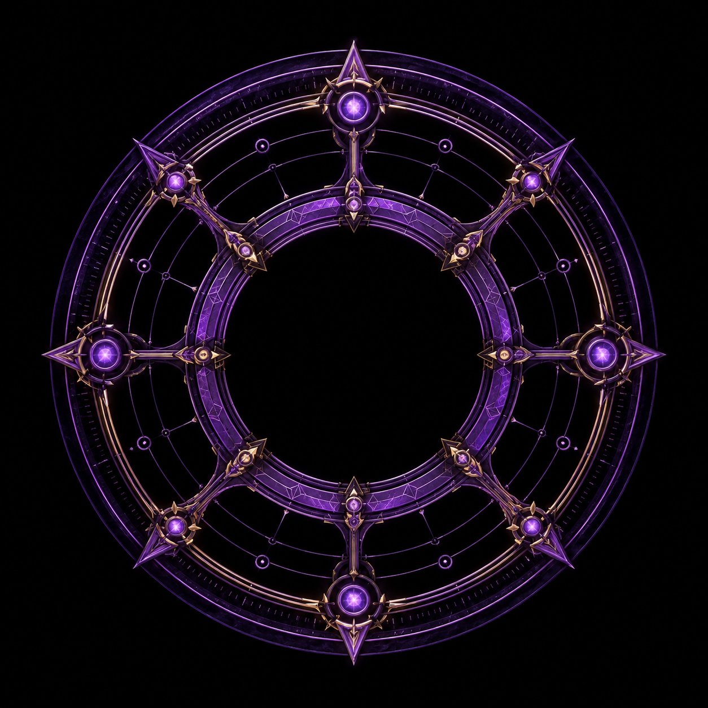
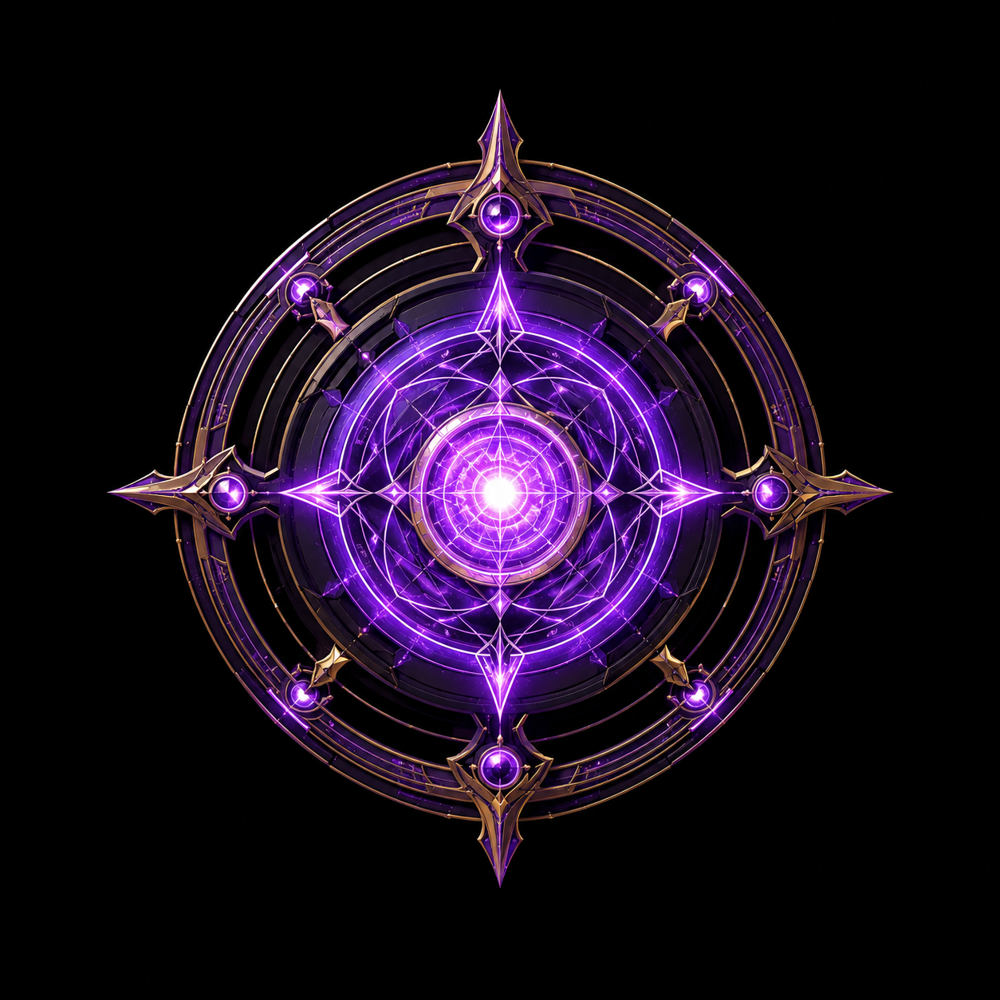

Arquivo operacional // avaliação inicial
Maisie
Maisie Hundown foi recrutada recentemente pela Ordo Realitas após sobreviver a eventos paranormais e demonstrar capacidade própria de adaptação, combate e manipulação ritualística. Este dossiê registra uma avaliação inicial para sua primeira missão oficial.
Identificação de Recruta
Situação com a Ordo
Maisie não fazia parte da Ordo antes dos eventos iniciais da campanha.
Designação inicial após o recrutamento.
Experiências paranormais anteriores existem, mas não foram missões oficiais da organização.
Avaliação inicial
Usa Energia, recursos médicos e tecnologia própria para se adaptar rapidamente.
Acesso atual registrado: rituais de até 2º círculo.
Equipamentos pessoais têm peso operacional e psicológico no dossiê.
Criativa, intensa e capaz de transformar recursos improvisados em vantagem real.
Frase marcante
“Eu transformo o caos em arma”
Roda de Atributos
Leitura inicial dos cinco atributos principais registrados no dossiê de recrutamento de Maisie Hundown.



Nenhum atributo selecionado
Clique em um ponto da roda para ver sua descrição.
Capacidades Observadas
Registro mecânico e narrativo das capacidades apresentadas por Maisie no momento do recrutamento. O painel considera seu estado atual em NEX 40% e não trata a personagem como agente veterana da Ordo.
Classe e Poderes
Capacidades principais que sustentam o uso de rituais, cura e treinamento técnico da recruta.
Rituais Declarados
Registro ritualístico apresentado na avaliação inicial de Maisie Hundown. Este arquivo exibe apenas formas que a recruta possui acesso operacional no momento: forma base e, quando permitido, forma Discente.
Energia
Rituais ligados a instabilidade, magnetismo, eletricidade, distorção visual e caos aplicado.
Equipamento Declarado
Registro dos itens apresentados no recrutamento e dos equipamentos associados ao dossiê. O painel separa inventário mecânico real de tecnologia pessoal importante para a identidade operacional de Maisie.
Inventário Mecânico
Itens presentes na ficha da recruta, com dados de uso, categoria, alcance, dano ou função operacional.
Perfil Visual
Mulher negra, cabelo branco cacheado preso em coque, pano roxo na cabeça, jaqueta roxa aberta, detalhes em fogo rosa, braço esquerdo mecânico com canhão integrado e tanque ritualístico nas costas.
Maisie passa a sensação de alguém que adaptou o próprio corpo para sobreviver. Sua estética mistura invenção, improviso, caos e um controle quase desafiador sobre a própria dor.
Personalidade
Maisie é carismática, inteligente e independente. Enquanto algumas pessoas enxergam o paranormal apenas como algo a temer, ela também vê oportunidade: entender, manipular e devolver esse poder contra aquilo que tenta destruí-la.
Ela gosta de fazer as coisas do próprio jeito, é criativa, curiosa e intensa. Sob pressão, pode se tornar explosiva, mas por trás disso existe uma forte capacidade de proteção, principalmente com pessoas que poderiam passar pelo mesmo tipo de sofrimento que ela viveu.
Linha do Tempo do Dossiê
Infância, invenções e Walt
Maisie nasceu no Rio de Janeiro e cresceu como alguém criativa, solitária e resistente a críticas. Encontrou nas áreas de física, química e robótica um ponto de apoio. Walt, seu assistente robótico, foi um dos primeiros grandes símbolos dessa fase.
A faculdade e a perda do braço
Durante a faculdade noturna, Maisie encontrou uma manifestação paranormal ligada a uma luz carmesim e a um colega transformado por forças do Outro Lado. A fuga deixou marcas permanentes e resultou na perda do braço esquerdo.
Braço mecânico e ocultismo
Em vez de se afastar do paranormal, Maisie exigiu respostas. Criou um braço mecânico para substituir o membro perdido e começou a aprofundar sua relação com rituais, tecnologia e Energia.
Hospital abandonado
Em um confronto marcado por Energia caótica, Maisie sobreviveu quando todos os demais do grupo caíram. Ela canalizou a força pelo braço mecânico e escapou ao custo de destruir o local. Esse evento consolidou sua ligação com o caos como ferramenta de sobrevivência.
Entrada na Ordo Realitas
No momento atual do arquivo, Maisie ainda não é uma agente experiente da Ordo. Ela é uma recém-recrutada carregando conhecimento, trauma, tecnologia própria e uma primeira missão oficial grande demais para alguém que acabou de entrar.
Galeria do arquivo